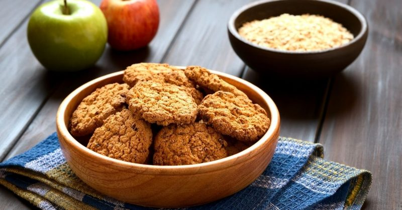
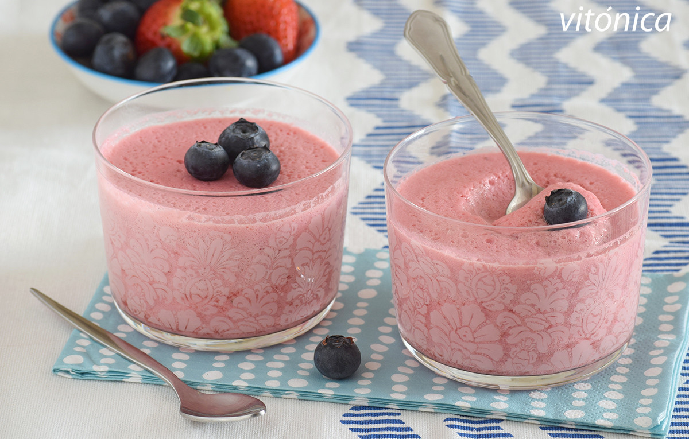
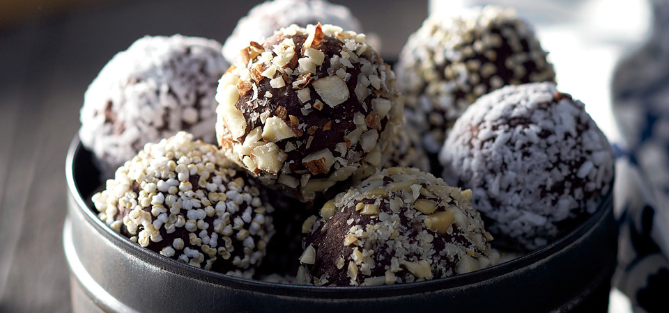
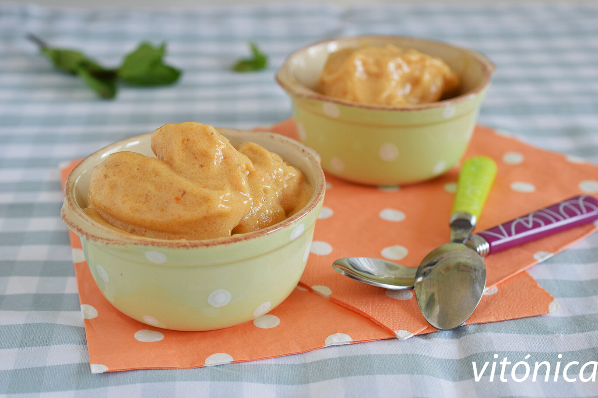

¡LAS MEJORES RECETAS DULCES!
Galletas de avena y manzana

Ingredientes
• Puré o compota de manzana250 g
• Copos de avena - - - 80 g
• Almendras crudas laminadas - - - 20-50 gramos
• Almendra molida - - - 1 cucharadita
Tiempo total: 25m
• Elaboración: 10m
• Cocción: 15m
PROCEDIMIENTO:
•Precalentar el horno a 180ºC y preparar una bandeja engrasándola o cubriéndola con papel sulfurizado. Si se
van a tostar las almendras, colocarlas en una sartén sin grasa y llevar al fuego, removiendo bien, hasta que
empiecen a dorarse.
•Dejar enfriar.
•Colocar el puré de manzana en un cuenco y agregar los copos de avena, la sal y la canela.
•Mezclar bien hasta tener una masa homogénea.
•Añadir las almendras y otros ingredientes al gusto, si se desea. La textura debe ser muy húmeda, pero
tenemos que ser capaces de formar pequeñas porciones sin que se desmoronen. Añadir más avena si fuera
necesario.
•Con ayuda de un par de cucharillas, distribuir la masa en la bandeja formando galletas redondeadas. Si
las hacemos más gruesas quedarán más tiernas por dentro, y viceversa. Hornear durante unos 10-13 minutos,
hasta que estén firmes al tacto y ya se hayan dorado bien.
•Esperar unos minutos fuera del horno y desmoldar con una espátula. Dejar enfriar sobre una rejilla
Mousse de fresas y queso fresco

ingredientes
• Fresas (pesadas sin rabito) - - - 500 g
• Queso fresco batido desnatado - - - 500 g
• Esencia de vainilla (una cucharadita)
• Agar agar (equivalente a 9 hojas de gelatina) - - - 2 g
Tiempo tota: l20 m
• Elaboración 20 m
• Reposo 2 h
PROCEDIMIENTO:
•Solo se necesita una buena batidora o un procesador de alimentos con el que conseguir una mezcla homogénea.
•Escoge fresas maduras que sean más dulces, y así no echarás de menos el edulcorante.
Trufas de chocolate vegana

Ingredientes
• 160 g de dátiles jugosos pesados sin hueso
• 80 g de almendras crudas laminadas
• 1/2 cucharadita de café soluble descafeinado
• 1 pizca de sal
• unas gotas de esencia de ron o de vainilla
• 20 g de cacao en polvo puro sin azúcar
• un poco de agua
• cacao en polvo y pistachos
• coco o avellanas para rebozar
PROCEDIMIENTO:
•Trocear un poco los dátiles sin hueso y colocarlos en una picadora, trituradora o procesador de alimentos.
•Añadir el resto de ingredientes, menos el agua, y triturar todo hasta tener una masa homogénea.
•Agregar un chorrito de agua y volver a procesar, hasta conseguir una textura húmeda, maleable, ligeramente
pegajosa.
•Podemos probar la masa y añadir más cacao o alguna otra especia si queremos ajustar el sabor. También
podemos darle un toque de chocolate en tableta negro rallado muy fino. Colocar unos cuencos con cacao en
polvo, coco rallado, pistachos o avellanas picadas, y tomar porciones pequeñas de masa con una cucharilla.
•Formar bolitas con las manos y rebozar en el ingrediente deseado.
•Sacudir el exceso y colocar en una bandeja o en cápsulas de bombones. Se pueden degustar inmediatamente o
dejar que se enfríen y endurezcan en la nevera.
Helado de mango, banana y melón

Ingredientes
• Mango congelado - - - 60 g
• Melón cantalupo u otra variedad bien dulce - - - 60 g
• Banana congelado - - - 120 g
• Mantequilla de cacahuete (opcional) - - - 10 g
• Menta fresca (opcional)
• Esencia de vainilla al gusto
• Cúrcuma molida una pizca
Total de tiempo: 10 m
•Elaboración 10 m
•Reposo 1 h
PROCEDIMIENTO:
•Acordarse de congelar la fruta previamente, preferiblemente el día antes.
•Cuanto más maduro esté el plátano, más dulce será el helado, aunque también tendrá un sabor más marcado.
•Tenemos que pelarlo y trocearlo antes de introducir en una bolsa de congelación, ya pesado. También
pelaremos y trocearemos el mango, que deberá estar también maduro, y lo pesaremos antes de congelarlo por
separado.
•Ponerlo en una trituradora, picadora, batidora o procesador de alimentos, y añadir el plátano y el mango.
Empezar a triturar a intervalos cortos, a gran potencia, parando de vez en cuando para remover.
•Luego de unos minutos tendremos una crema helada homogénea. Podemos probarla y añadir algo más de alguna de
las frutas. Añadir una pizca de vainilla y cúrcuma (opcional, aporta más color) y volver a triturar.
•El helado se puede servir directamente o guardar en un recipiente limpio para congelarlo entre 30-60
minutos, si queremos una textura más firme. Remover antes de servir por si hubiera formado cristales al
congelarse, con un poco de menta fresca si lo deseamos.
.png)
.jpg)